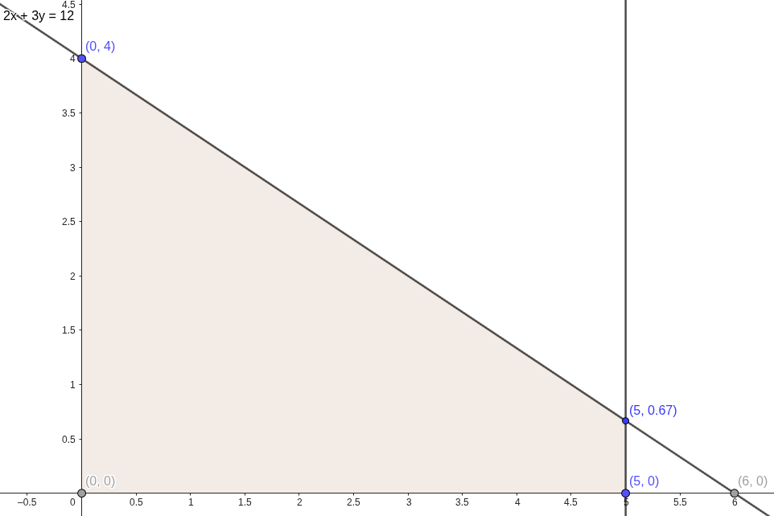
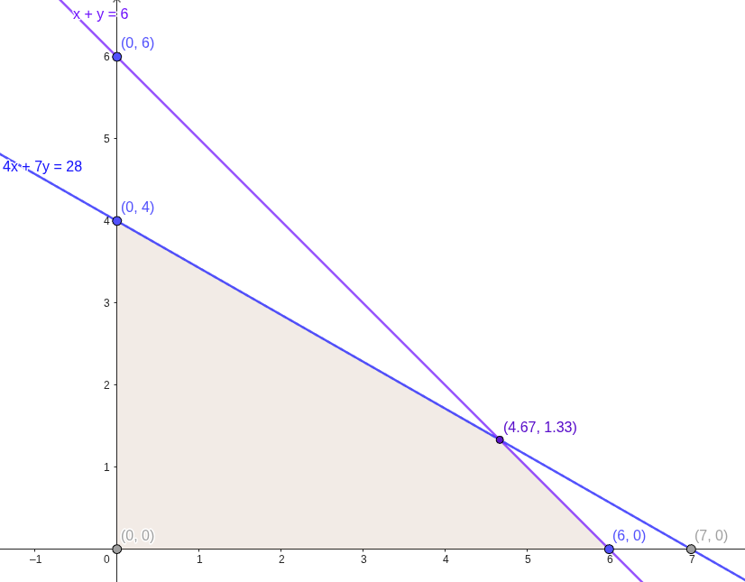
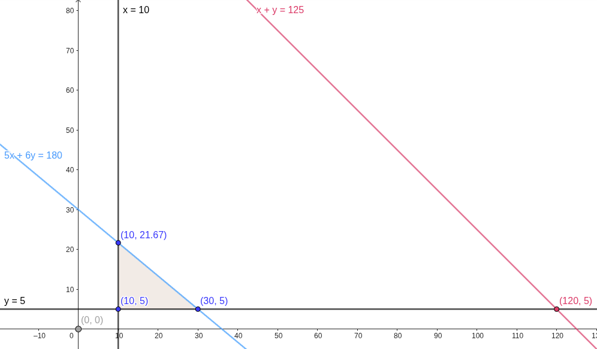
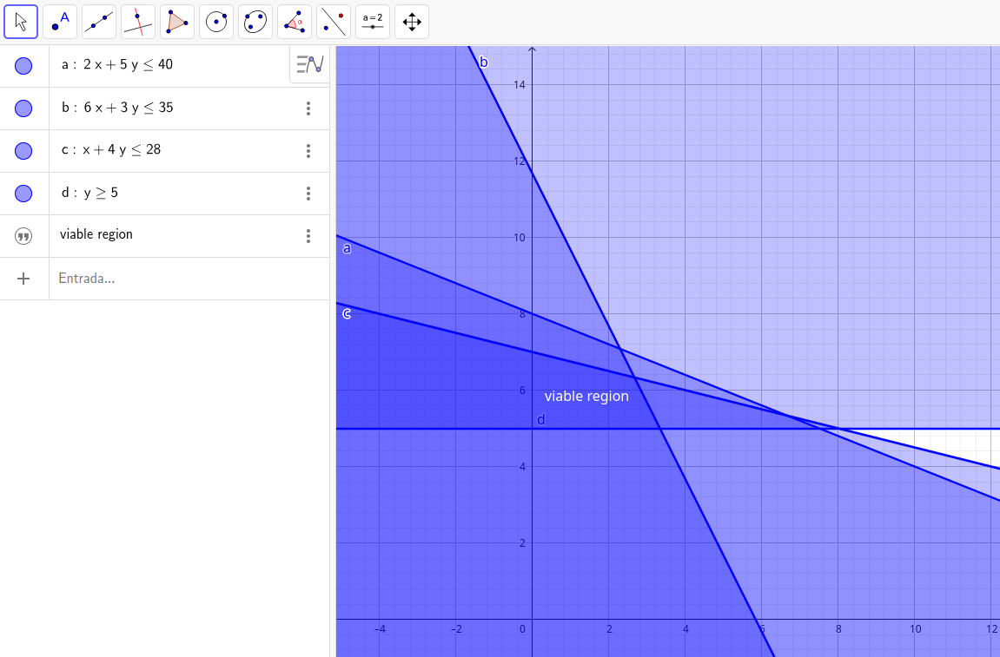
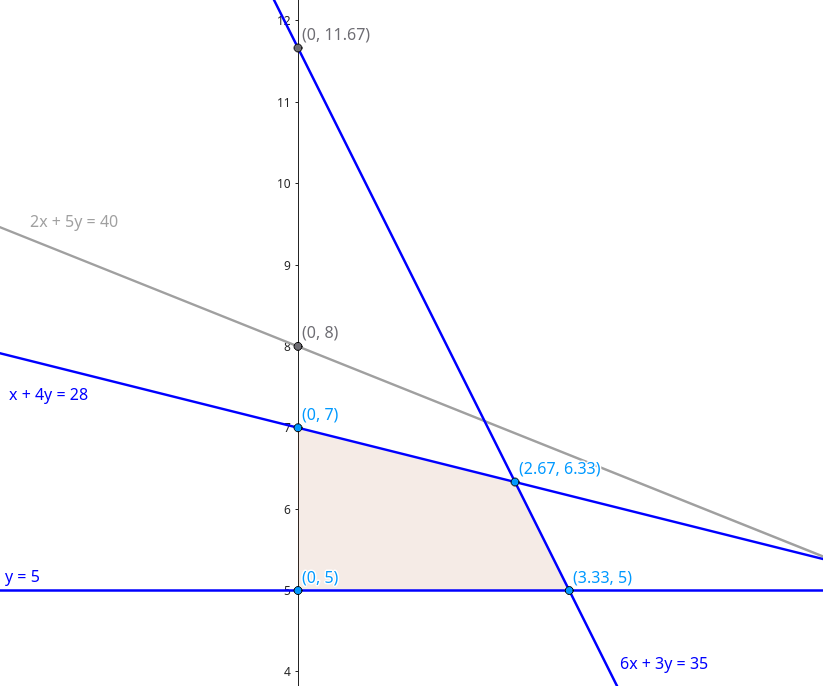
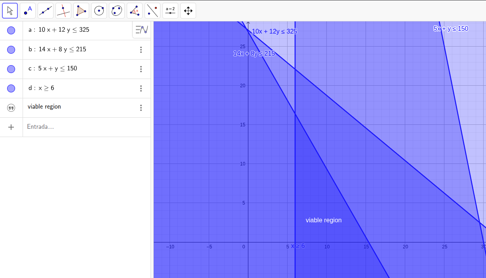
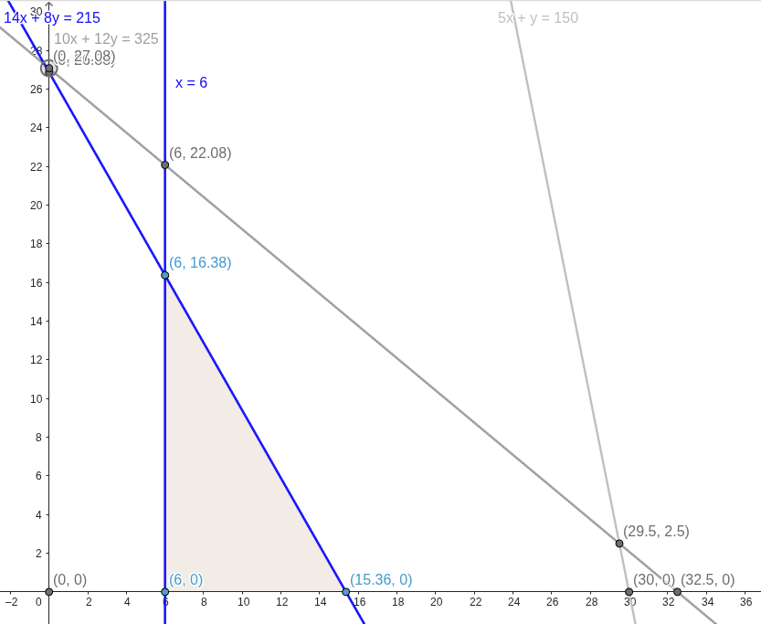

<----- Back to Exercises Index
In these basic examples we will analyse and calculate the given equation systems in order to build a graphical representation using Geogebra. The idea is to understand the process for turning the inequations into a graph for analysis purposes.
Tip: In these examples we are turning the inequations into equations simply to make them appear as lines instead of an area in Geogebra, this is useful to trace the viable region with the sets given, as we will see.
1)\(\begin{cases} 2x+3y \leq 12 \\ x \leq 5\end{cases}\)
2)\(\begin{cases} 4x+7y\leq28 \\ x+y\leq6\end{cases}\)
3)\(\begin{cases}x+y\leq125 \\ 5x+6y\leq180 \\ x\geq10 \\ y\geq5 \end{cases}\)
4)\(\begin{cases}2x+5y\leq40 \\ 6x+3y\leq35 \\ x+4y\leq28 \\ y\geq5 \end{cases}\)
5)\(\begin{cases}10x+12y\leq325 \\ 14x+8y\leq215 \\ 5x+y\leq150 \\ x\geq6 \end{cases}\)
In this case we can isolate x and y in order to find both sets
Since the second term only has x, we can consider y as being equal to zero, so:
$$x\leq5$$ $$(5,0)$$ In this case, we see that the line created by x=5 (5 , 0) intersects with the line from the equation. Giving us (5 , 0.67). We can confirm this by replacing the x in the equation:
$$2(5)+3y=12$$ $$10+3y=12 \therefore y=\dfrac{12-10}{3} \therefore y≃0.6666666667\rightarrow0.67$$we can isolate x and y in order to find both sets in both equations.
However, since we have a proper system of equations, we can also calculate the points where both equations intersect:
$$\begin{cases} 4x+7y\leq28 \\ x+y\leq6\end{cases}$$Here, we will use the second equation to isolate x and find y using the first one:
$$x+y=6$$ $$x=6-y$$ $$4(6-y)+7y=28 \therefore 24-4y+7y=28 \therefore 3y=4 \therefore y=\dfrac{4}{3}=1,33$$ $$y=1,33$$now for finding x:
$$x+1.33=6 \therefore x=6-1.33$$ $$x=4.67$$So we have the following set:
$$(4.67, 1.33)$$ With the graph, we can see that this is the coordinate where both equations intersect.
In this example we have both x and y specifying that the viable region must be greater or equal to 10 and 5, respectively.
First, by turning these inequations into equations we can take in consideration their coordinates:
$$\begin{cases}x=10 \\ y=5 \end{cases} \rightarrow (10,5)$$Now we can find the intersection between the first and second equation via a system of equations:
$$\begin{cases}x+y=125 \\ 5x+6y=180\end{cases}$$Using the replacement method:
$$x+y=125 \rightarrow x=125-y$$ $$\\$$ $$5(125-y)+6y=180 \therefore 625-5y+6y=180 \therefore y=180-625$$ $$y=-445$$ $$\\$$ $$x+(-445)=125$$ $$x=570$$ $$(570,-445)*$$*In this case we can ignore this intersection altogether since it gives us a negative value, in the context of Operational Research we always take in consideration that \(\mathbf{x,y\geq0}\).
For finding the next coordinates, since we know that \(x=10,y=5\), we can replace it's values in the first and second equation, however as you can see in the image below, the coordinates from \(x+y=125\) are out of the viable region found, thus not being calculated in this example.
Replacing the x and
With these coordinates we can find the viable region.
As stated before, the region must be greater or equal to \((10,5)\).
Using Geogebra, we can see the viable area in the cartesian plane by inserting the inequations, the darkest colored area indicates where the viable region is located:
In this case we would need only to take in consideration the coordinates resulting from the systems of equations between the second and third equations:
$$\begin{cases}6x+3y\leq35 \\ x+4y\leq28 \end{cases}$$Doing the replacement method:
$$x=28-4y$$ $$6(28-4y)=35 \therefore 168-24y+3y=35 \therefore y=\dfrac{135}{21} \therefore y=6.33$$ $$\\$$ $$x+4(6.33)=28 \therefore x=28-25.32 \therefore x=3.32$$ $$(3.32, 6.33)$$In relation to \(y\geq5\), we can see that it intersects with the second equation, by taking the statement that \(y\geq5\ \rightarrow (0, 5)\), we can use this set to find the coordinates of this function:
$$6x+3(5)=35 \therefore x=\dfrac{20}{6} \therefore x=3.33$$ $$\\$$ $$6(0)+3y=35 \therefore y=\dfrac{35}{3} \therefore y=11.66$$ $$(3.33, 11.66)$$Finally, we can find the coordinates for the third equation by isolating the factors:
$$x+4y=28$$ x = 0 $$0+4y=28 \therefore y=\dfrac{28}{7} \therefore y=7$$ $$(0,7)$$ y = 0 $$x+4(0)=28 \therefore x=28$$ $$(28,0)$$Note that not all of these points are used to form the viable region:
This is a more compact example using Geogebra as a validation tool, but by graphing it by hand, on paper, you would need to calculate all of the sets in order to first find the viable region and then trace their respective coordinates.
Just like the last example, here we use Geogebra in order to find the viable region, confirming the coordinates:
We see that the second equation is the only one that is actually part of the viable region intersecting with \(x\geq6\).
In this case we can understand that if \(x=6\rightarrow(6,0)\)
So to find y:
$$14(6)+8y=215 \therefore y=\dfrac{215-84}{8} \therefore y=16.38$$ $$(6,16.38)$$ We already know the coordinates for \(x=6\), and the remaining coordinate can be found by isolating x:
$$14x+8(0)=215 \therefore x=\dfrac{215}{14} \therefore x=15.36$$ $$(15.36,0)$$